Table des matières
Grid
(version 0.8.3 )
To open the Grid window, click [GRID]
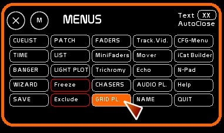
Introduction to Grid
Grid is a module that enables the creation of complex lighting effects inspired by musical sequencers.
Grid allows you to edit lighting paths, patterns and events in a visual manner.
We could easily say that Grid is a 4xCueList module, as it contains 4 independent GridPlayers.
You can load a Grid in each one.
There are 127 possible Grids in White Cat.
Each Grid can contain 1024 steps.
Each step has a specific time IN/OUT and of course a Delay In/Out.
Keeping a step a certain time (aka Wait or Dwell time) is done using the same Delay In and Delay Out.
Each GridPlayer receives a Grid, and reads it, cross-fading from step to step.
It is from a GridPlayer that you can edit the Grid it contains.
A GridPlayer has dynamic contents. So they need to be stored inside a fader to be outputted.
Description
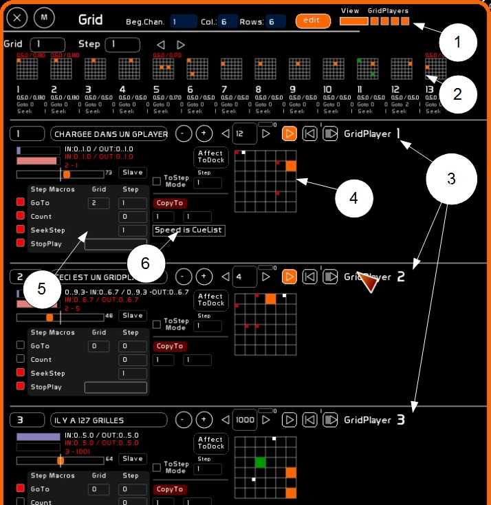
Grid window is composed of:
- the configuration of the Grid
- a Grid viewer
- 4 GridPlayers
- with their editing matrix
- step properties
- special editing and assignment to a dock
Grid Configuration
Grid configuration specifies the channel matrix that will be manipulated by Grid.
To edit Begin Chan/Col. & Rows you need to set [EDIT] mode to ON.
- Begin Chan: The beginning channel of the matrix (1st slot upper left). Channel numbers are read from left to right, by rows. Over mousing a slot shows up channel number and level. Here channel 3 is at 25% in this slot.
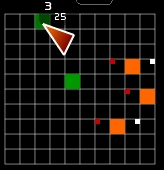
- Col: number of columns in the matrix, max 24
- Rows: number of rows in the matrix, max 24
- Edit: must be ON to edit a grid or a step
- View: View panel to inspect a Grid in a preview mode
- Gridplayers: 4 buttons enable you to see in the Grid window the 4 GridPlayers. When hidden they are still active.
View panel
View panel allows you to have a look inside the 128 grids to see the contents of their steps, in a global and quick way. No editing is possible from this panel.
The four macros do not show up in this view.
To activate this panel, click [VIEW].
To select the grid to be Viewed:
- type number of the grid (from 1 to 127)
- click the grid box
To select the step to see in View:
- type step number (from 1 to 1023)
- click the step box
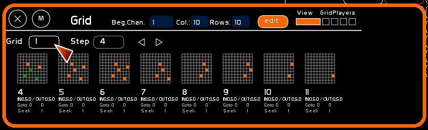
GridPlayers
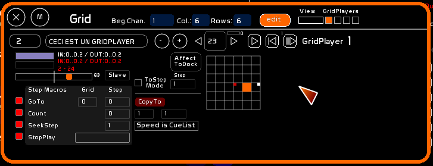
A GridPlayer plays a grid that is loaded inside.
Each Grid can contains 1024 steps.
Each step contains:
- recording of lighting states in the matrix (the channels)
- IN/OUT, delay In/delay Out times
- macros per step
Those are the 3 types of information that are read while playing a step.
Commands
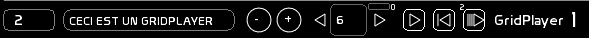
Description
From left to right:
- Selected Grid number box
- Name of the selected Grid
- A navigator with mouse inside the 127 grid, by clicking - / + buttons
- Step number on stage, and navigation with arrows in the steps
- Play/Pause of the GridPlayer
- Seek: go to a defined step. A little number shows which step is defined as the seek step, it can be defined in Macros.
- Autostop button: when this mode is on, reading of a grid is done step-by-step. When the button is off, the play stops after a step has been read. To cross-fade to the next step the Play button has to be pressed.
Manipulations
- Loading a Grid inside a GridPlayer:
- type grid number
- Click grid box
- or use + - buttons
- Giving a name to the Grid:
- call [NAME] [F5]
- type its name
- click the name box
- Setting on stage step in GridPlayer:
- type step number
- click the step box
- or use arrows
- Assign a time to a step
- click [TIME] or press [F6]
- use the TimeWheel with Min. Sec or 1/10th of sec
- select IN/OUT or DIN/DOUT
- set TIME AFFECT ON
- click the step

- Clear a step:
- click [CLEAR] or press [F4]
- click step number box
- Clear a grid:
- click [CLEAR] or press [F4]
- click grid number box
- To clear or assign a time to a group of steps:
- set Gridplayer step to the first step of the series to be modified
- click ToStep Mode box.
- click last selection step number
- click ToStep Number box
- choose [CLEAR] or [TIME] as previously described, and click the step box to execute the action
Here Grid 1, from steps 9 to 25 will be affected by the operation:
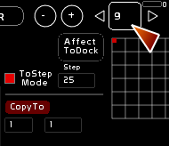
Matrix
- When a slot appears in orange, the channel is at Full
- In green, channel is at a level less than 100%
- Little red boxes in left upper corner of a slot indicates the channel was lit in the previous step of the grid.
- Little white boxes in right upper corner of a slot indicate that the channel that will be lit in next step (of the grid, or in goto).
Editing channels matrix with mouse
- To record a channel at Full in the active step:
- simply click the slot
- To record a channel at a level
- type channel level
- click the slot
- channel appears in green.
- To remove a channel from a step
- click a lit channel: it will be off
Editing matrix with[F1][F2][F3]
It is possible to record in a step intensities coming from the CueList buffer or the Faders buffer:
- Record onStage or Blind output from CueList:
- press [F1]
- click the step box
- Copy a memory in the step:
- type the memory number
- press [F1]
- click the step box
Be aware that it is a copy of a memory, and not a link to a memory.
- Modifying channel levels:
- press [F2]
- select channels
- set them to desired intensity
- click the step box
- F2 will cut from CueList the selected channel to paste it in the step
- Reporting mix of Fader's buffer and CueList Buffer:
- press [F3]
- click the step box
Clearing a step
- press [F4]
- click the step box
Step Properties
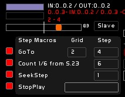
Cross-fade Visualization
In the upper part you can see:
- cross-fade state from the actual step to the next step: onstage step is in light blue, preset step in a light pink.
- recorded time of the onstage step, which refers to the previous cross-fade
- recorded time of the actual cross-fade in red, transformed by accelerometer
- what is in preset (Grid/Step)
Assigning times approach
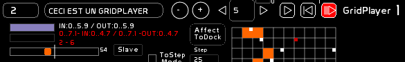
When you record a step, you record:
- in how much time this step fades (IN)
- in how much time the previous step goes out (OUT)
- delay IN and OUT to create wait times or delayed fades
When you record a time in a step, you are recording the already completed cross-fade. Not the one to come.
Accelerometer
Accelerometer enables you to change the speed of a cross-fade. Value 64: normal speed. Accelerometer to the left slower, to the right faster.
if [Slave] is on:
- GridPlayer output is sent to a Fader
- each fader has an accelerometer
- the gridplayer accelerometer will be remotely controlled by the Fader's accelerometer
Step Macros
There are 4 types of macros, you can set ON or OFF for each GridPlayer.
These 4 macros enable you to navigate thru different grids inside the same GridPlayer (Goto), to do a loop or to repeat a loop a certain number of times (Count), to jump to any step of the grid (Seek) or to define a stopping point that ends the Play of a grid Player (StopPlay).
The idea underlying these macros is to create lighting phrases you can call and recall easily, in an elaborate sequence of effects, or in live, during a concert.
Goto:
It is the destination of the cross-fade in preset. If Goto mode is ON (little square box), when a step arrives on stage, and the Goto has a value greater than 0 in Grid box and Step Box, Grid Player will load in preset the goto next step.
If Goto is off, or a steps contains a Goto Grid 0 Level 0, the play will continue normally, without goto.
This function allows you to pass from one grid to another, or from a combination of complex lighting moves quite smoothly and easily, without re-recording.
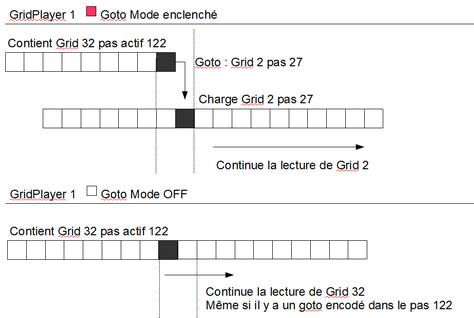
Count:
Is applied to GoTo. It will works only if:
- GoTo mode is ON
- GoTo is different than Grid 0 Level 0
Count counts the number of goto's done from a goto step.
When all the Goto's defined in the count have been all done, Goto will be inactive and play will continue normally to next step.
In this image, step 18 has a Goto to Grid 1 Step 1.
We are at the 6th GoTo done on this step.
After 13 GoTo's have been done(each coming back to Grid 1 Step 1), play will continue normally to step 19.
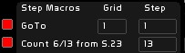
It allows you to loop a sequence of steps precisely, before leaving it.
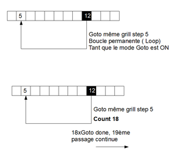
You can of course have multiple Counts of loops within loops:
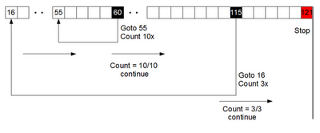
SeekStep:
The defined SeekStep appears as a small number just above the seek button. Redefinition of the seek point is done by the GridPlayer when setting on stage a step with a different Seek point attribution.
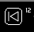
It works only if SeekStep is activated (little red box on the left).
Seek may be triggered manually (mouse/midi/banger). It only sends a seek point within the loaded grid in the player.
So you can change seek points in your reading of the grid for live functions.
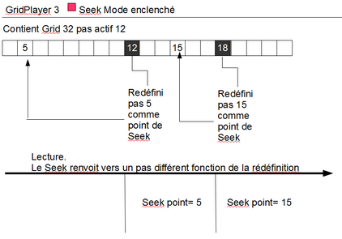
StopPlay:
When StopPlay mode is ON (little red box on the right), and you have set ON the big box of the StopPlay, the play will stop once you have arrived at this step.
You can manually relaunch (mouse, midi, banger) to play the next step in the preset.
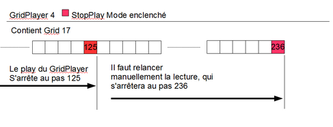
Options
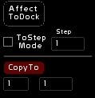
Assign to dock
- Set Affect to dock ON
- Call the Faders window [F10], or Minifaders window [Shift-F10]
- Press [F1]
- Click the dock in the Fader window
- or if it's the Minifaders window, the fader number
- confirm
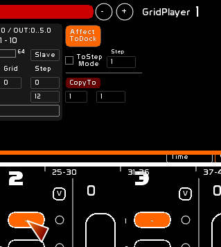
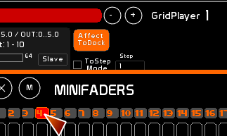
The 4 Gridplayers are loadable in 4 different Faders.
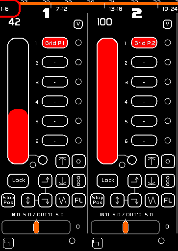
ToStep Mode
ToStep Mode enables you to define a set of multiples steps, on which perform an operation.
When it is on, the active step in the GridPlayer will be the first step taken in this series of steps. The step number inside the ToStep box will be the ending step of the series.
- To clear or assign a time on a series of steps:
- Set GridPlayer on the first step of the series
- click ToStep Mode ON (little square).
- type ToStep number
- click ToSTep box to define last number of the series
- choose [CLEAR] ([F4] or [TIME] [F6] as previously explained to perform this operation on all the steps.
Here steps from 9 to 25 in Grid 1 will be the series affected by the operation.
ToStep Mode maybe used with CopyTo.
CopyTo
Be aware, CopyTo is an action button, and not a button mode. It allows you to copy a step to a destination step, or to copy a series of steps to a destination step.
- type grid number you want to copy IN
- click CopyTo Grid box
- type step number to copy IN
- click CopyTo Step box again
- if ToStep mode is OFF: you will copy the current step of the GridPlayer to the Grid and step defined in CopyTo Grid/Steps boxes.
- if ToStep mode is ON: you will copy the current step of the GridPlayer and steps until the StepTo INSIDE the step and following, specified by CopyTo Grid/STep boxes
- click CopyTo
- Confirm
Copy concerns channels, times, macros.
In the example here, Grid 5 from step 5 to step 25 will be copied inside Grid 2 from step 25 (up until step 46).
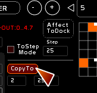
Insert
Allows you to insert a number of empty steps to follow the one you are in.
Type the number of empty steps to insert (ignore the Grid number and only type in the step box).
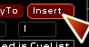
SnapFader
v. 0.8.3.1
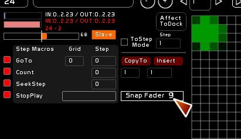
You can also register the issued states of a fader directly in the grid, so that the content can either be fixed or dynamic. You can also use Draw to quickly create a lighting state.
To attribute to a fader:
- Click [EDIT]
- Type the fader number
- Press [F1]
- Click [Snap Fader]
To recover the levels issued from the fader, click [Snap Fader].
Midi Assignment, Grid specific
As with almost all commands in White Cat, Grid commands are remote controllable in midi. See: Midi Assignment and Configuration and Summary of midi assignments
But there is a very subtle difference between the way to call a Grid number and a step number call.
Grid has been developed for the KeyFrames project from Group Laps. In this project, White Cat receives midi from another application, being remotely controlled from a timeline.
Gridplayers will have their contents changed, depending on the music, and the Banger structure will not be enough.
So we can attribute a midi signal to the Grid Box to load in a GridPlayer, and to the Step Box of the gridplayer.
If we assign a Key On Chan 0 Pitch 58 to the Grid Box, velocity will specify which Grid Number to load inside the GridPlayer (aka Vel 56 will load Grid number 56).
Concerning Steps, as there are 1023 steps and midi allows only 127 steps, there is a double midi assignment, meaning TWO signals remotely controlling the Step Box:
When you assign the step box directly, the midi signal will concerns UNITS:
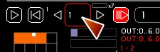
When you assign the little box on its right, the midi signal will assign the x7 factor of the midi step:
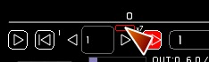
So if WhiteCat is remotely controlled from a ProTools, a CuBase or any other software enabling midi encoding on a timeline, we will assign two signals for the step box, ie:
- Step Unit : CC Chan 0 Pitch 56 - Stepx7: CC Chan 0 Pitch 58
To set the step of the gridplayer in step 6, you will send:
-if the x7 factor is already in 0, CC Chan 0 Pitch 56 Vel 6
-if the x7 factor was previously used: CC Chan 0 Pitch 58 Vel 0 then CC Chan 0 Pitch 56 Vel 6
When WhiteCat receives a step order, it will take x7 factor:
desired step= Velocity of Step Unit + (Velocity of x7 factor * 7)
You can change the factor, without affecting the step, until a new step is called.
Let's say you want to load step 458:
- calculation of Stepx7: 458/7= 65 something
- Step Unit= 458- (65*7) = 3
So we send the 2 following notes
CC Chan 0 Pitch 58 Vel 65 (the x7 factor) then CC Chan 0 Pitch 56 Vel 3 (the units)
Including GridPlayer inside a memory in the CueList
You can launch with Banger. GridPlayer 1 is accessible from the CueList, see page down.
GridPlayer 1 embedded in CueList : a double CueList
The 4 GridPlayers are usable with Bangers in the CueList, allowing you to create complex effects with a single GO.
GridPlayers are like 4 parallel CueLists . To ease manipulation of a GridPlayer in a more conventional way, you can call GridPlayer 1 inside the CueList window. You will have GO/GO BACK/JUMP/Quick navigation (W/X–Z/X on Eng keyboard) and accelermeter available.
When GridPlayer 1 is embedded in the CueList, it continues to deliver its calculations inside the fader. Its output is still in the Fader Buffer(channels in orange).
The double CueList only works on GO (no manual cross-fade of the GridPlayer 1 for the moment).
To activate this special mode, go in CueList window [F9] and click [GPL1] box, near the [LINK] and [BANGER] boxes. The CueList window will extend itself on the right, enabling general manipulations of a GridPlayer, but without the matrix.

Method
- As dot memories do not exist in Grids structure, be sure to skip steps to provide free steps for future use.
- If you want to use it very simply, like doing some channel times effects, set GridPlayer 1 in StopMode.
- If you prefer to create slaves and various linked light movements, use the macros StopPlay in the macros, and to keep free steps between events.
- Embedding inside the CueList is calling Steps of theloaded Grid in GridPlayer 1. So when you are encoding you can only call steps and not grid numbers. You would use the macro GOTO to go to other grids.
- If you are working on multiple grids, use Banger and GridPlayer function Stop&Load, to recall the correct Grid number when you are navigating inside CueList. It is very important if you are doing grid jumps with GOTO or you will become confused.
- Sending a Go will trigger the play only if the step called in the memory preset is different from the step in GridPlayer 1. This to avoid loop effects.
- If you have midi control, using a fader as a master of your GridPlayer 1 will be very nice …
Assign a Grid Step to a memory
- Type the Step Number and click the memory area corresponding to GridPlayer 1
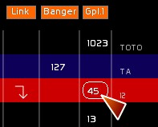
Slaving GridPlayer1's accelerometer from CueList's accelerometer
- Click [Speed is CueList] to slave GridPlayer1's accelerometer to CueList's accelerometer. This command is also assignable in midi.
Examples
A Go sending a cross-fade to another memory and a sequence of cross-fades in the GridPlayer 1 (with stop)
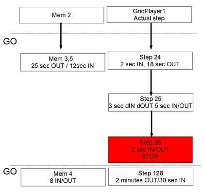
A Go sending cross-fade with a loop until next cross-fade
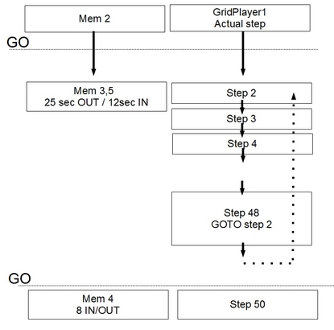
A Go sending cross-fade and loop, CueList is used normally, in parallel GridPlayer 1 is running all alone, until next step that will get it out of the loop
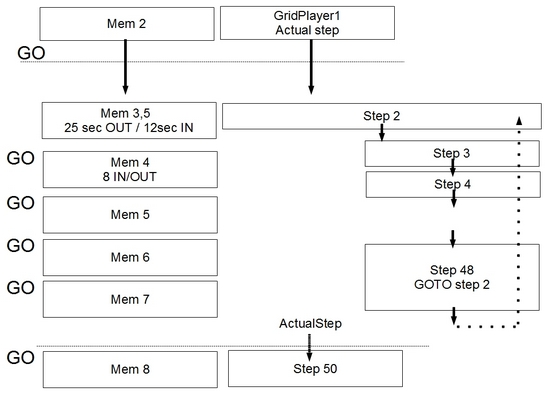
A Go sending a cross-fade and a loop, CueList is used normlly and GridPlayer 1 runs in parallel, until next step that will send it to another step. Bangers are there to stop GOTO mode and looping, and to change the grid number with a Load&Play or Stop&Load
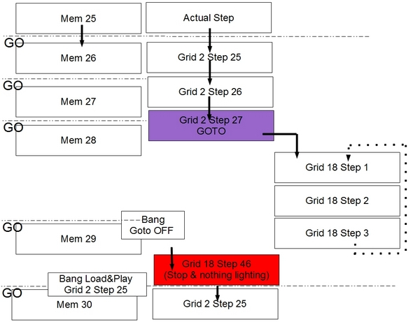